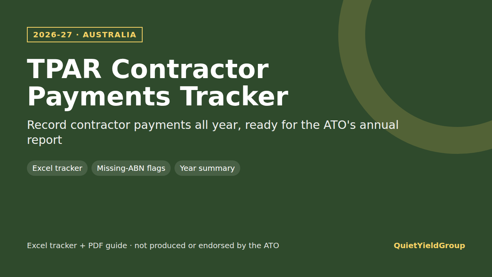

Record contractor payments through the year in the form the ATO's Taxable payments annual report asks for, with a whole-dollar total for each contractor.
A$15 · instant download
Launch offer: 25% off with code LAUNCH25 until 30 November 2026.
If your business pays contractors for building and construction, cleaning, courier, road freight, IT, or security, investigation or surveillance services, you may need to lodge a Taxable payments annual report (TPAR). For 2026-27 it is due 28 August 2027.
This Excel tracker lets you record payments as you make them rather than piecing the year together in August. You list each contractor once (name, ABN, address) and add a row for each payment: the date paid, the invoice, the gross amount, the GST, and any tax withheld because no ABN was quoted. The Year summary then totals each contractor in whole dollars, as the ATO asks.
Built-in checks flag a missing address, an ABN that fails the check-digit test, an ABN not yet looked up, a payment dated outside 2026-27, GST above one-eleventh of the gross, and a no-ABN payment with nothing withheld. A Check sheet takes you through the ATO's own tests: the 10% test, and the 50% test for building and construction.
The 8-page guide covers who must lodge, what to record, which payments to leave out, how lodging works, and mistakes to avoid. Each rule is taken from an official ATO page (the ABN check from ABN Lookup), and the page is named.